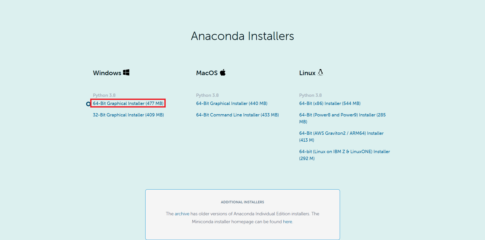

环境搭建与Python入门
本文我们先了解什么是Python，然后在Windows上搭建Python环境，学会如何运行Python代码，再跑几个样例代码做测试，感受一下Python的魅力。
Python是什么
计算机上的各种软件都是用编程语言写成的，编程语言可以沟通人与计算机，便于人们更好地使用计算机的算力和资源。
Python语言正是当前最流行的编程语言，主要特点是简单明了、功能强大、扩展性强，只有你想不到，没有它做不到。
Python在各种工程和科研领域都有应用，尤其在人工智能领域，几乎占垄断地位。
Python3目前正在完全取代Python2，二者大同小异，因此我们只学习Python3，也只用Python3，本文中的所有Python均指Python3.
我们后面要做的爬虫、NLP等内容都是基于Python语言的，所以对Python有基本了解是很有必要的。
安装Anaconda
我们通过安装Anaconda来搭建Python环境。
Anaconda是当前最流行的Python发行版本，其中包含了Python和许多常用工具包及其依赖，还提供了conda、pip等工具用于环境和包管理，十分方便。
我们可以在这里下载最新的安装包，建议下载Windows 64 bit版本安装包，如下图所示：

安装完成后来测试一下。按下Windows键，找到Anaconda3 (64-bit) 文件夹，然后打开**Anaconda Powershell Prompt (Anaconda3)**，输入Python：
(base) PS C:\Users\15617> pythonAnaconda Powershell Prompt (Anaconda3)就是我们后面经常要用到的PowerShell，这是Anaconda提供给我们的。
然后按下回车，看到类似如下输出即可表明Anaconda安装成功：
(base) PS C:\Users\15617> python
Python 3.8.3 (default, Jul 2 2020, 17:30:36) [MSC v.1916 64 bit (AMD64)] :: Anaconda, Inc. on win32
Type "help", "copyright", "credits" or "license" for more information.
>>>现在可以关闭PowerShell了。
安装Sublime Text 3
安装完了Python环境，我们现在需要一个编辑器来写Python代码，这里推荐的是Sublime Text 3，也是油油最喜欢的代码和文本编辑器。
Sublime Text3的特点是简洁轻便美观并且免费。唯一缺点是偶尔会弹出来购买提示框，按Esc忽略即可。
如下图，可以在这里下载Windows 64 bit版本安装包。

安装还是建议安装在D盘，安装完成后在桌面上会出现Sublime Text 3的图标，打开即可使用。
咪咪的第一个Python代码
现在我们来写第一个Python代码。
打开Sublime Text 3，在键盘上按Ctrl+N，这样就新建了一个文件。在文件中输入以下内容，只有一句话，调用print函数输出双引号引起来的字符串：
print("Beautiful fairy, happy fairy!")然后在键盘上按Ctrl+S，在另存为框中选择一个目录，这里作为示例选的是E盘100dataset文件夹。
然后在文件名一栏输入test.py，点击保存。注意，目录应尽量避免中文名。
代码写完了，现在我们来执行这份名为test.py的代码。首先需要打开PowerShell并切换目录。
在文件管理器中打开你刚才选择的目录，在地址栏单击鼠标，然后Ctrl+C可以复制当前目录位置，如下图，我们复制了E盘100dataset文件夹的位置：

然后依照上部分讲的方式，打开PowerShell，在其中输入”cd “，然后Ctrl+V粘贴我们刚才复制的目录位置，再回车，即可将PowerShell的工作目录转移到我们代码的位置下，如这里我们转移到了”E:\100dataset”的位置：
(base) PS C:\Users\15617> cd E:\100dataset现在我们可以执行代码了。在PowerShell中输入**”python “+待执行的.py文件名**，这里应该是“python test.py”，如下：
(base) PS E:\100dataset> python test.py然后按下回车键，然后你就可以看到PowerShell窗口在空白行输出的字符串啦：
(base) PS E:\100dataset> Beautiful fairy, happy fairy!怎么样，是不是很简单。当然，字符串可以是其他任何内容。
Python输出九九乘法口诀表
我们再来看一个例子。将test.py中的内容全部删掉，输入以下内容（可以复制粘贴）：
for i in range(1, 10):
for j in range(1, i+1):
print('{}x{}={}\t'.format(j, i, i*j), end='')
print()然后在PowerShell窗口再次输入：
(base) PS E:\100dataset> python test.py并按下回车，怎么样，是不是得到了一个九九乘法口诀表？试着读一下代码，能读懂它的逻辑吗？
Python输出心形
将test.py中的内容全部删掉，输入以下内容：
import time
words = "lovemi"
for item in words.split():
print('\n'.join([''.join([(item[(x-y) % len(item)] if ((x*0.05)**2+(y*0.1)**2-1)**3-(x*0.05)**2*(y*0.1)**3 <= 0 else ' ') for x in range(-30, 30)]) for y in range(12, -12, -1)]))
time.sleep(1.5)以同样的方式运行，是不是得到了一个心形？这段代码比较复杂，不需要掌握，只是想展示一下Python语言的强大和精妙。
给咪咪比个❤哦~
Python小游戏：贪吃蛇
运行这个小游戏的代码需要先安装一个名为pygame的包，在PowerShell中输入以下内容并回车就可以使用pip安装新的工具包了：
(base) PS C:\Users\15617> pip install pygame我们以后还会用pip安装和管理其他工具包。等待安装完成，然后在test.py中输入以下代码并以前述方式运行：
import random
import pygame
import sys
from pygame.locals import *
Snakespeed = 17
Window_Width = 1600
Window_Height = 1000
Cell_Size = 20 # Width and height of the cells
# Ensuring that the cells fit perfectly in the window. eg if cell size was
# 10 and window width or windowheight were 15 only 1.5 cells would
# fit.
assert Window_Width % Cell_Size == 0, "Window width must be a multiple of cell size."
# Ensuring that only whole integer number of cells fit perfectly in the window.
assert Window_Height % Cell_Size == 0, "Window height must be a multiple of cell size."
Cell_W = int(Window_Width / Cell_Size) # Cell Width
Cell_H = int(Window_Height / Cell_Size) # Cellc Height
White = (255, 255, 255)
Black = (0, 0, 0)
Red = (255, 0, 0) # Defining element colors for the program.
Green = (0, 255, 0)
DARKGreen = (0, 155, 0)
DARKGRAY = (40, 40, 40)
YELLOW = (255, 255, 0)
Red_DARK = (150, 0, 0)
BLUE = (0, 0, 255)
BLUE_DARK = (0, 0, 150)
BGCOLOR = Black # Background color
UP = 'up'
DOWN = 'down' # Defining keyboard keys.
LEFT = 'left'
RIGHT = 'right'
HEAD = 0 # Syntactic sugar: index of the snake's head
def main():
global SnakespeedCLOCK, DISPLAYSURF, BASICFONT
pygame.init()
SnakespeedCLOCK = pygame.time.Clock()
DISPLAYSURF = pygame.display.set_mode((Window_Width, Window_Height))
BASICFONT = pygame.font.Font('freesansbold.ttf', 18)
pygame.display.set_caption('Snake')
showStartScreen()
while True:
runGame()
showGameOverScreen()
def runGame():
# Set a random start point.
startx = random.randint(5, Cell_W - 6)
starty = random.randint(5, Cell_H - 6)
wormCoords = [{'x': startx, 'y': starty},
{'x': startx - 1, 'y': starty},
{'x': startx - 2, 'y': starty}]
direction = RIGHT
# Start the apple in a random place.
apple = getRandomLocation()
while True: # main game loop
for event in pygame.event.get(): # event handling loop
if event.type == QUIT:
terminate()
elif event.type == KEYDOWN:
if (event.key == K_LEFT) and direction != RIGHT:
direction = LEFT
elif (event.key == K_RIGHT) and direction != LEFT:
direction = RIGHT
elif (event.key == K_UP) and direction != DOWN:
direction = UP
elif (event.key == K_DOWN) and direction != UP:
direction = DOWN
elif event.key == K_ESCAPE:
terminate()
# check if the Snake has hit itself or the edge
if wormCoords[HEAD]['x'] == -1 or wormCoords[HEAD]['x'] == Cell_W or wormCoords[HEAD]['y'] == -1 or wormCoords[HEAD]['y'] == Cell_H:
return # game over
for wormBody in wormCoords[1:]:
if wormBody['x'] == wormCoords[HEAD]['x'] and wormBody['y'] == wormCoords[HEAD]['y']:
return # game over
# check if Snake has eaten an apply
if wormCoords[HEAD]['x'] == apple['x'] and wormCoords[HEAD]['y'] == apple['y']:
# don't remove worm's tail segment
apple = getRandomLocation() # set a new apple somewhere
else:
del wormCoords[-1] # remove worm's tail segment
# move the worm by adding a segment in the direction it is moving
if direction == UP:
newHead = {'x': wormCoords[HEAD]['x'],
'y': wormCoords[HEAD]['y'] - 1}
elif direction == DOWN:
newHead = {'x': wormCoords[HEAD]['x'],
'y': wormCoords[HEAD]['y'] + 1}
elif direction == LEFT:
newHead = {'x': wormCoords[HEAD][
'x'] - 1, 'y': wormCoords[HEAD]['y']}
elif direction == RIGHT:
newHead = {'x': wormCoords[HEAD][
'x'] + 1, 'y': wormCoords[HEAD]['y']}
wormCoords.insert(0, newHead)
DISPLAYSURF.fill(BGCOLOR)
drawGrid()
drawWorm(wormCoords)
drawApple(apple)
drawScore(len(wormCoords) - 3)
pygame.display.update()
SnakespeedCLOCK.tick(Snakespeed)
def drawPressKeyMsg():
pressKeySurf = BASICFONT.render('Press a key to play.', True, White)
pressKeyRect = pressKeySurf.get_rect()
pressKeyRect.topleft = (Window_Width - 200, Window_Height - 30)
DISPLAYSURF.blit(pressKeySurf, pressKeyRect)
def checkForKeyPress():
if len(pygame.event.get(QUIT)) > 0:
terminate()
keyUpEvents = pygame.event.get(KEYUP)
if len(keyUpEvents) == 0:
return None
if keyUpEvents[0].key == K_ESCAPE:
terminate()
return keyUpEvents[0].key
def showStartScreen():
titleFont = pygame.font.Font('freesansbold.ttf', 100)
titleSurf1 = titleFont.render('Snake!', True, White, DARKGreen)
degrees1 = 0
degrees2 = 0
while True:
DISPLAYSURF.fill(BGCOLOR)
rotatedSurf1 = pygame.transform.rotate(titleSurf1, degrees1)
rotatedRect1 = rotatedSurf1.get_rect()
rotatedRect1.center = (Window_Width / 2, Window_Height / 2)
DISPLAYSURF.blit(rotatedSurf1, rotatedRect1)
drawPressKeyMsg()
if checkForKeyPress():
pygame.event.get() # clear event queue
return
pygame.display.update()
SnakespeedCLOCK.tick(Snakespeed)
degrees1 += 3 # rotate by 3 degrees each frame
degrees2 += 7 # rotate by 7 degrees each frame
def terminate():
pygame.quit()
sys.exit()
def getRandomLocation():
return {'x': random.randint(0, Cell_W - 1), 'y': random.randint(0, Cell_H - 1)}
def showGameOverScreen():
gameOverFont = pygame.font.Font('freesansbold.ttf', 100)
gameSurf = gameOverFont.render('Game', True, White)
overSurf = gameOverFont.render('Over', True, White)
gameRect = gameSurf.get_rect()
overRect = overSurf.get_rect()
gameRect.midtop = (Window_Width / 2, 10)
overRect.midtop = (Window_Width / 2, gameRect.height + 10 + 25)
DISPLAYSURF.blit(gameSurf, gameRect)
DISPLAYSURF.blit(overSurf, overRect)
drawPressKeyMsg()
pygame.display.update()
pygame.time.wait(500)
checkForKeyPress() # clear out any key presses in the event queue
while True:
if checkForKeyPress():
pygame.event.get() # clear event queue
return
def drawScore(score):
scoreSurf = BASICFONT.render('Score: %s' % (score), True, White)
scoreRect = scoreSurf.get_rect()
scoreRect.topleft = (Window_Width - 120, 10)
DISPLAYSURF.blit(scoreSurf, scoreRect)
def drawWorm(wormCoords):
for coord in wormCoords:
x = coord['x'] * Cell_Size
y = coord['y'] * Cell_Size
wormSegmentRect = pygame.Rect(x, y, Cell_Size, Cell_Size)
pygame.draw.rect(DISPLAYSURF, DARKGreen, wormSegmentRect)
wormInnerSegmentRect = pygame.Rect(
x + 4, y + 4, Cell_Size - 8, Cell_Size - 8)
pygame.draw.rect(DISPLAYSURF, Green, wormInnerSegmentRect)
def drawApple(coord):
x = coord['x'] * Cell_Size
y = coord['y'] * Cell_Size
appleRect = pygame.Rect(x, y, Cell_Size, Cell_Size)
pygame.draw.rect(DISPLAYSURF, Red, appleRect)
def drawGrid():
for x in range(0, Window_Width, Cell_Size): # draw vertical lines
pygame.draw.line(DISPLAYSURF, DARKGRAY, (x, 0), (x, Window_Height))
for y in range(0, Window_Height, Cell_Size): # draw horizontal lines
pygame.draw.line(DISPLAYSURF, DARKGRAY, (0, y), (Window_Width, y))
if __name__ == '__main__':
try:
main()
except SystemExit:
pass注意，代码中”#”后面的部分为注释，是为了方便读者阅读代码而存在的，不具备语法意义。
在操作界面按下键盘上的方向键上下左右，就可以控制贪吃蛇的移动方向。怎么样，是不是很有趣~